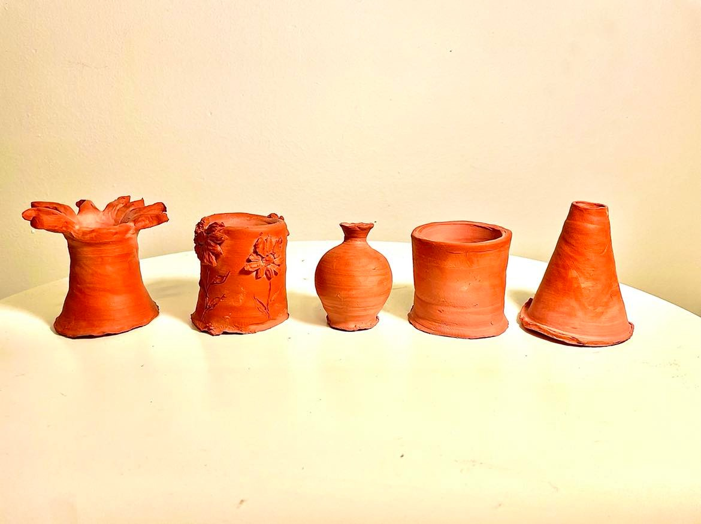

Simulating Pottery
In the winter semester of 2021, I took a class called Elec 341 which taught us about control systems. In this class, we learnt how to simulate and control complex electo-mechanical circuits and about how to evaluate them as feedback functions. One day, when I was doing pottery at home, I thought I could apply the exact same principals.
So I took it to Matlab! I seeked to answer one question: Could I try to model the same thing that I see while doing pottery by hand, with transfer functions that we used in this class?
I stated out with just trying to model the rim. Image starting with a perfect circle, now I want to stretch this circle with my hands to make it bigger. I do that by pulling on either side of the circle, until it becomes an ellipse. Then, I quickly add force in the opposite direction as the wheel rotates to smoothen out this ellipse to a new, bigger, circle. With the help of Matlab, I applied that same principal to all other parts of the 3D figure, and made Matlab simulate it with 3D plots and animations

Go check out my github repo for this project here:
and the slide deck I used to present it here: